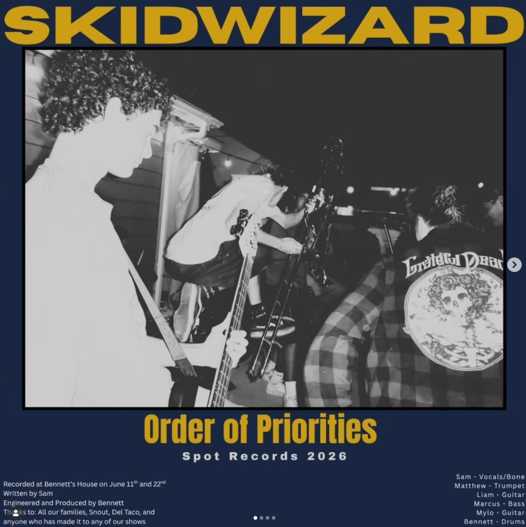

Review
SKID WIZARD - Order of Priorities

Verdammte Scheiße.
Sind die jung.
Ich weiß nicht, ob ich SKID WIZARD gut finde oder ob ich einfach neidisch bin, dass ich in ihrem Alter nicht einmal halb so locker aussah.
Wahrscheinlich beides.
Musikalisch war ich ziemlich schnell bei den Mad Caddies.
Nur nicht ganz so entspannt.
Mehr Druck.
Mehr Dreck unter den Fingernägeln.
Mehr Ellbogen im Refrain.
Und dann dieses Video.
Man merkt sofort, dass die Burschen nicht nur Songs spielen wollen.
Die wollen gesehen werden.
Nicht auf diese unangenehme Influencer-Art, bei der jeder Blick in die Kamera vorher in Excel geplant wurde.
Eher so:
Kamera läuft.
Alle drehen kurz frei.
Passt.
Ob das Absicht ist oder einfach passiert, weil die Band Bock auf den ganzen Quatsch hat?
Keine Ahnung.
Ist mir auch egal.
Man schaut ihnen gerne zu.
Und hört ihnen genauso gerne zu.
Auf Instagram schreiben sie, dass "Order of Priorities" jetzt draußen ist. Dazu ein paar Hashtags: Ska, Punk, Local Music, New Music. In den Kommentaren steht sinngemäß: Bläser machen alles besser.
Kann man mal so unterschreiben.
Vor allem, wenn die Bläser nicht wie Deko klingen, sondern wie jemand, der hinter dir steht und dich Richtung Tanzfläche schubst.
"Order of Priorities" ist genau diese Sorte Punkrock, bei der man nach ein paar Sekunden wieder weiß, warum man sich diesen Lärm seit Jahrzehnten freiwillig antut.
Schnell genug.
Melodisch genug.
Frech genug.
Und mit genau der richtigen Menge jugendlicher Übertreibung.
Laut Cover kommt das Ding über Spot Records 2026. Auf dem Screenshot stehen außerdem ein paar Namen, die vermutlich zur Band gehören: Sam, Matthew, Liam, Marcus, Mylo und Bennett.
Ich lehne mich jetzt einfach mal arrogant aus dem Fenster:
Wenn SKID WIZARD so weitermachen und überhaupt Bock auf größere Bühnen haben, dann sehen wir die in ein paar Jahren vermutlich nicht mehr vor fünfzig Leuten in irgendeinem schwitzenden Raum mit kaputter Lüftung.
Andererseits ...
Vielleicht ist genau dieser Raum der bessere Ort für so eine Band.
Eng.
Laut.
Klebrig.
Vorne fliegt irgendwer in die Monitore.
Hinten verschüttet jemand Bier.
Und mittendrin stehen ein paar junge Typen, die so aussehen, als hätten sie gerade erst angefangen und trotzdem schon ziemlich genau wissen, wohin der Krach soll.
Falls ihr zufällig am 3. Juli in Long Beach seid: Laut Instagram spielen SKID WIZARD bei Di Piazza's mit 2 Step Chicks und Squatchy. Free Show. All ages. Doors at 8.
Geht hin.
Und trinkt ein Bier für mich mit.
Kann man machen.
Sollte man sogar.